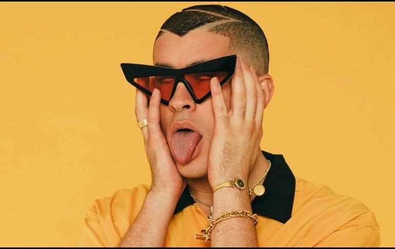

X 100pre
X 100pre (estilizado en mayúsculas y abreviación de: Por siempre) es el álbum de estudio debut del rapero y cantante puertorriqueño Bad Bunny. Fue lanzado el 24 de diciembre de 2018 (mismo día que Nochebuena) a través de Rimas Entertainment. El álbum cuenta con colaboraciones de Diplo, El Alfa y Drake. La revista Rolling Stone lo colocó en el puesto 41 como uno de los 100 mejores álbumes debut de todos los tiempos y en el puesto 447 de la lista de los 500 mejores álbumes de todos los tiempos.
Antecedentes y lanzamiento
El disco fue grabado en un descanso de sus extensas giras por América y Europa, inicialmente iba a titularse ‘La nueva religión’. Fue producido en su mayoría por el aclamado productor del género urbano «Tainy» y «La Paciencia "Young Paci"», también por Diplo en la canción «200 MPH». La canción «Estamos bien» se estrenó el 29 de junio del 2018 con vídeo oficial marcando la vuelta de Bad Bunny a la música, «Mía» junto a Drake de la misma manera el 11 de octubre del mismo año y la canción «Solo de mi» 10 días antes de la salida del disco. Este fue anunciado el 23 de diciembre de 2018, y fue lanzado un día después en la Nochebuena de ese mismo año. El 23 de enero de 2019 se estrenó el vídeo oficial de «Caro».
Promoción
"Estamos Bien" fue el primer sencillo que lanzó, acompañado de un video musical el 28 de junio de 2018. El 18 de octubre de 2018, lanzó el sencillo "Mía" con Drake, marcando la segunda canción de Drake en español. Tras el éxito de "Mia", Bad Bunny lanzó "Solo de Mí" el 15 de diciembre de 2018. El 18 de enero de 2019, estrenó el vídeo de "Caro". Ricky Martin hace coros en el tema. El 14 de febrero de 2019 siguió el vídeo de "Si Estuviésemos Juntos", y el 6 de abril de 2019 se estrenó el vídeo de "La Romana", en el que participa el artista dembow dominicano El Alfa.
Recepción
En Metacritic, que asigna una puntuación normalizada sobre 100 a las reseñas de la crítica general, X 100pre recibió una puntuación media de 84 basada en cinco reseñas, lo que indica una "aclamación universal". Alexis Petridis, de The Guardian, elogió la "creatividad fuera de lo común" de Bad Bunny, y opinó que éste "se siente menos como parte del paisaje pop actual que como un artista que opera ligeramente adyacente a él. Se separa de la manada tanto por su deseo de asumir riesgos como por sus raíces". El autor señala que el disco contiene una variedad de géneros musicales, como el pop punk, la música andina, el dembow dominicano y el "rock de estadio de los 80 barrido por el viento".
Listado de canciones
Aquí tenemos el listado de canciones y en colaboracion con spotify tenemos una prueba gratuita de cada canción: